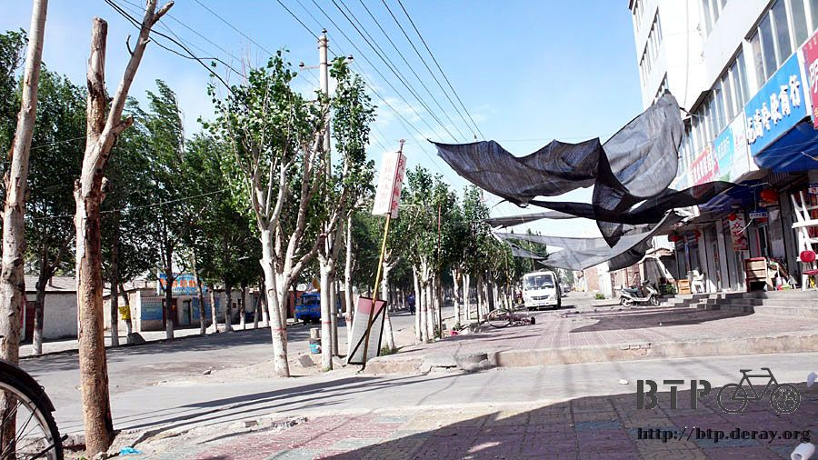
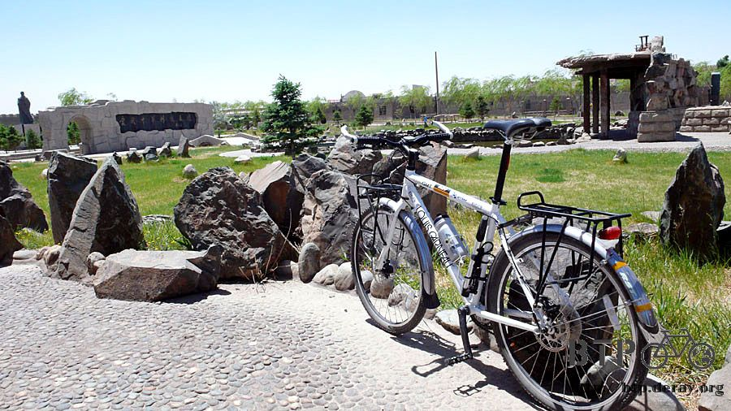
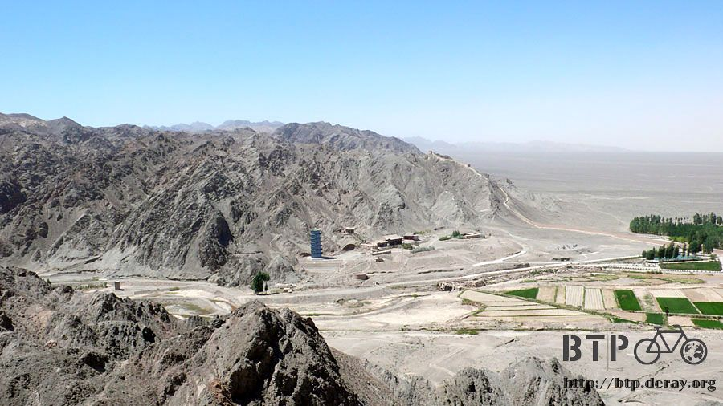
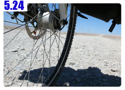

懸壁長城
昨天住宿的時候，我忘了可以在嘉峪關休息一兩天，只跟老闆說我要住一個晚上。
今天一睡醒，看到外頭是久違的晴朗好天氣，心裡正開心今天可以趁好天氣去長城玩。
老闆突然跟我說，『我今天不走吧？』
咦？我是要多住一天沒錯，但是你怎麼會知道呢？
老闆說外頭風很大，氣象報導說有七級風，我今天如果要出發騎車的話，可能騎不動。
原來不只是太陽大會影響騎車、雨大會影響騎車，連風大也會有問題。

到外頭一看，真的是狂風四起，『少年小樹之歌』的主角說他小時候很輕，可以順著風被吹起來飛。
就算我現在是這成年人，這麼大的風，我披一件床單也可以被吹的飛起來~_~
洗完臉之後，一早的第一件事情，不是吃早餐，而是去網吧關心一下網站到底恢復了沒？
網站莫名其妙被Bluehost給關閉，連網域都被取消，事前完全沒有告知我，而是在事後給我一封Email要我跟他們客服連繫。
連帳號都被停止使用，我只好註冊一個新的臨時帳號，然後氣急敗壞的在網吧寫英文信問他們到底是怎麼回事？
結果只有電腦回信，說現在是下班時間，要等到上班時間才會有人處理。
真是一肚子惱火外加不能理解，這就是我預付三年費用，將近六千台幣所換得的服務品質嗎？
一直等到隔天早上去網吧收信，終於才接到他們的回覆，首先這樣就是非常不合邏輯的處理方式。
他們應該要先事先告知我會有這樣的情形，或是希望我做什麼樣的改善，否則就要關閉我的網站。
而不是先把我的網站關掉，再叫我和他們聯繫，然後我得自己寫Email詢問，他們才會告知關站的原因。
這是什麼狗屁做事態度？
簡單的講，不是我沒繳錢、也不是因為連載旅行日誌很多人看，導致流量暴增、好加在也不是被駭掉。
只是被不明人士舉發我的網站中有非法的內容，所以Bluehost就將我的網站全部都停掉。
這樣的回覆更讓我滿腦子問號？什麼東西是不法內容？我的網站什麼時候有不法內容了？
沒辦法打國際客服電話，只好再寫信去問怎麼回事，講也不講清楚一點，這樣我怎麼知道要怎麼處理。
還好這次不需要再等一個晚上才會收到信，大概半小時後就有人回覆了。
所謂的不法內容，就是那些累積已經好幾年、四百多套的Mac中文化軟體下載的部分。
之前一直都沒事，現在突然跟我說這是不合法的？
沒關係，那我先把它拿掉總可以吧，拜託快一點把我的網站恢復原狀。
所以在還沒找到新的空間可以放這些軟體中文化之前，所有的下載都暫時不能使用，請Mac使用者見諒。
網站的事情處理好之後，就去吃午餐，今天吃牛肉砂鍋，真的是黑黑的砂鍋，再配上一個小餅。
鍋裡面有海帶絲、不明菇類、青江菜、冬粉和滷牛肉片，配上超好喝的湯頭。
就算喝到最後湯頭裡有一點一點像是沙粒的黑黑物質，我還是把湯全部都喝光光，一滴也不剩。

下午趁著天氣好，要去長城玩～喔耶！
帶著兩包餅乾、一包花生當路上的點心，輕裝出發，連手套頭巾都沒戴。
因為地圖要價五塊五，非常不便宜，所以就沒買，反正路長在嘴巴上，稍微問一下人就可以知道長城怎麼走。

稍微迷路一下之後，也順利的在下午一點抵達天下第一雄關，嘉峪關。
大家都知道嘉峪關是長城在西邊的終點，所以這邊在古代的時候是軍事重地，為了怕匈奴們從這裡進攻的緣故。
事過境遷，幾千年過去了，嘉峪關依然還有許多現代化的軍事基地和部隊駐守。
在我頂著逆風騎車的時候，就看到沙漠裡有坦克車在狂飆，揚起滿天的風沙。
還有阿兵哥很辛苦的頂著烈日在跑步，不知道要跑去哪裡呀~_~

因為嘉峪關的門票要價61元，又是號稱AAAA四個A級的國家遊覽區，所以我很不想進去。

想起之前花30元去一樣是四個A級的黃河遊覽區，真是很浪費錢，根本沒什麼值得一看的東西。
更因為小多不能和我一起進去，要停在停車場(停車費五毛)，而我又沒帶車鎖出來，
所以天下第一雄關，到過門口就算到過了。
趴在旁邊的柵欄，看看裡面的圍牆，原來那個就是萬里長城呀。
有點猶豫要不要進去，都走到這裡了，不去的話我會不會一輩子就留下一個沒爬過長城的遺憾？
先在這裡不需要門票的黑山石雕群公園閒晃殺時間，順便思考一下要不要進去參觀，還有小多該怎麼辦這兩個問題。
公園裡面都是一些奇怪的石頭，有的雕刻成人的樣子還寫上年代簡介，有的則在石頭上面畫壁畫。

然後到風格蓋成長城一般的商店街，用眼睛購物，看看就好，腦袋裡想的都是該不該去爬長城這個問題。

後來看到地圖告示牌，原來這邊的另一個地方，還有別的長城，名字叫做『懸壁長城』。
光聽名字就很酷，叼著冰棒離開天下第一關，往懸壁長城騎過去。
一樣是長城，這邊的門票只要21元，比剛剛的便宜40元，讓我很心動。
售票人員說我的自行車可以放在遊客服務中心裡，他們幫我看顧著，真是太感動了，這樣我就沒有後顧之憂了T_T

今天是星期三，遊覽車不會載客人到這裡來，因為這邊沒有像嘉峪關那樣的商店街，規模也比較小。
連當地的遊客也很少，我從一點半開始爬長城，到三點往下走回去，整座長城都只有我一個人！
真是超級優良的旅遊品質，簡直是砸大錢把長城給包起來讓我獨自參觀一樣，爽到不行。
從底下往上看是這樣的景色，一路往上爬會經過兩個烽火台。

我慢慢爬(喘)，還沒到頂端~_~ 聽說有兩個外國人花半年走了五千多公里的長城，真是非人的毅力。

長城修復的工程很細緻，腳下踩的依然是泥磚，而長城的材料依舊是夾雜著稻梗和穀殼的泥土牆。
連飄揚著旗子的旗杆都是用細竹竿，沒有因為修復就讓長城失去了原本的味道，這樣的用心修復讓我很佩服。
慢慢往上爬，看到另外一個地方也有長城的景色，現在長城已經沒有連在一起，都變成一段一段的，
之後我拿著剛剛買的票要去爬另外一座長城時，就被門口的人攔下來。
因為票券也和長城一樣，變得一段一段的，不同的地方就要再買一次票，都是獨立經營

本來在平地上風就已經很強了，結果一爬長城，越爬越高風勢也就跟著越來越張狂，不需要床單說不定也可以飛起來。
慢慢爬到懸壁長城的最高烽火台，再繼續走就沒有長城了，變成天險的障蔽。
心中猶記著從侯文詠那聽來的一句話『哪裡有困難，我們就往哪裡去。』
所以我抱著會被強風吹到山谷下的危險，兩手兩腳的往天險爬過去。

從天險回頭看自己爬過來的路，等等還得要再爬回去 ~_~
既然都搏命爬到這了，就照張相留個紀念。
坐在烽火台的高處往下看，和四周那一望無際的乾旱沙漠相比，底下的綠意真的很有綠洲的感覺。
道路兩旁都會種植一排綠樹，從高處往下看，就變成沙漠中的綠色線條，往城市延伸過去。

如果格局再放大一點，雖然武威、張掖、酒泉、嘉峪關這些地方雖然都是現代化的都市，
但和他們四周的自然環境相比較，他們又何嘗不是現代的城市綠洲呢？
從底下往上看長城，和從長城上往下看綠洲，真是截然不同的景致。

吹著冷颼颼的風，艷陽高照的天卻還是覺得渾身發冷，以前古代的衛兵站在這裡守衛著疆土，
眼睛所看到的是什麼樣的景色呢？那時候的夜晚一定更加的寒冷吧，站哨在哪一個年代都不輕鬆呀。
坐在階梯上看風景，等到覺得差不多了才往下走去。
長城的用處就是要防止匈奴進攻，所以要沿著山建築才有意義，在某些段落都是一半山壁一半長城的建築。
在回去市區的路上，肚子有點餓，很高興看到路旁有賣昨天吃的那個奇怪的鹽酥雞。
就停下車來又買了幾串，依序有菜捲、熱狗、炸丸子、臭豆腐、豆腐和我嘴巴裡正在吃的金針菇。
塗上醬料再灑上調味粉真的很令人回味，我還沒看到攤位，就已經在大老遠就聞到這獨特的香味。
買了一堆也才四塊錢，很開心的邊騎車邊吃回去旅館，但是我卻忘了某個東西在這邊@@"
(注意看照片的右上角有一個黑色的小東西)
等我回到旅館，換衣服稍做休息，準備要整裡照片的時候，突然發現我一直拿在左手的GPS不見了？
也沒有在外套或是褲子的口袋裡面，那到底被我放去哪了呢@@"
腦袋裡面最後有印象就是在奇怪鹽酥雞攤位這邊，我為了要一邊吃，一邊拍照，所以只好將手上的GPS放在櫃子上。
然後就這麼給忘記了！我的老天爺呀！等我發現東西不見，到想起來忘在哪裡，已經過了半個小時了。
馬上牽出小多，穿著我的睡褲和拖鞋，用旅行以來最拼命的騎乘速度騎回去找。
都過了那麼久，會不會被其他的客人隨手拿走呢@@" 這個要是掉了那我就沒辦法記錄騎乘的軌跡了。
雖然平常都是在早上開機然後放著，晚上找到旅館就關機，根本不會注意它的存在，但它一直都默默的在記錄著旅行的軌跡呀。
對不起我忘了你！請你務必還要在原地等我>"<
差不多距離攤位五十公尺遠的時候，我又聞到那獨特的香味，拼命的騎總算是趕回來了。
但是GPS已經不在原本的櫃子上，正準備要哭的時候，老闆娘就把東西從推車裡拿出來給我。
她發現我東西忘了拿的時候，我已經騎遠了，來不及叫我，又怕被別的客人拿走，所以就先幫我收起來放。
謝謝妳T_T老闆娘，謝謝妳，真的衷心的感謝妳，我一連說了十幾個謝謝，說到她都不好意思了，才高興的回去。
因為遮陽帽被大風吹走，可是西曬的問題還是要想辦法解決，
我住的旅館門口那條街，有可能是整個嘉峪關最熱鬧的地方吧=..=
一大早的時候是菜市場和早餐店，中午會開始賣吃的，下午會有雜貨小舖擺攤，到晚上就變身成帳篷餐廳和夜市。
我在這個熱鬧的市集買了一頂牛仔布料的棒球帽，這樣可以擋太陽，也不會因為風大就不能使用。
從開價五塊殺價到四塊成交，便宜入手。

八點天空還是跟白天一樣亮，但是肚子已經餓了，到門口那一條『嘉峪關最熱鬧的街』吃晚餐，繼續吃砂鍋料理。
競爭超激烈的，大家都在賣一樣的東西，牛肉砂鍋、羊肉砂鍋、雞肉砂鍋，價錢統一是六塊，所以決勝負的關鍵就是味道了。
挑了一間看起來比較乾淨的(我都看老闆的臉跟樣子)，點了一份雞肉砂鍋，在炭火上蓋上碗蓋猛烈的加熱。

等端上桌之後，砂鍋的溫度依舊讓湯熱的翻滾，加了蒜泥和辣椒，大餅都是免費附贈的，味道感覺比中午在餐館裡吃的還要美味。
吃飽後去昨天血拼的雜貨店再買點零食，因為明天就要出塞外了。
這些我已經習以為常的雜貨店、餐廳、旅館和我最愛的冰棒小販，都要漸漸的絕跡，想到這裡還真有點不捨得這些可愛的店家。
我喜歡吃花生，所以就買了各種口味的花生(都是甜的)。一共買五包，應該可以撐一陣子。
又買了麥芽牛奶和一捲衛生紙，以及一個零賣的沙琪瑪，付帳的時候，老闆娘語重心長的跟我說：
『我提醒你一句，這邊小偷多，東西要小心保管好。』
原來我口中那一條嘉峪關最熱鬧的街，同時也是小偷扒手最猖狂的街。
小至錢包、大至摩托車，什麼東西樣樣都偷，又因為天高皇帝遠，這裡再出去就是塞外，離北京幾千公里，誰管的著？
『那公安呢？這麼亂的話，連公安也不管嗎？』
老闆娘笑笑的說，那些公安都被收買了，不會管這種事，所以才特別提醒我要小心。
平常晚上出來街上吃飯的話，我只帶一點點的錢和筆記本，其他什麼都不帶，所以很少有我晚餐的照片或是夜晚的相片。
想起剛剛在等著吃飯的時候，大喇喇的拿出相機到處拍照，那時候不知道已經有多少小偷在覬覦我身上的其他財產~_~
好加在什麼東西都沒有掉，除了今天那個被我遺忘的GPS，其它東西一切都很平安。
明天就要出塞外了，好緊張也好開心！讓我感動吧，真正的沙漠～
繼續閱讀：5.24 消失的國道

中國-人民幣－ 1：4.3 台幣
5.23 |
總計：75元 |
午餐牛肉砂鍋6元、住店15元、冰棒四支2元、長城門票21元、牛仔棒球帽4元、奇怪鹽酥雞4元、網吧兩小時4元、雜貨店花生五包10元、麥芽牛奶1元、衛生紙1.5元、沙琪瑪0.5元、晚餐雞肉砂鍋6元 |
|